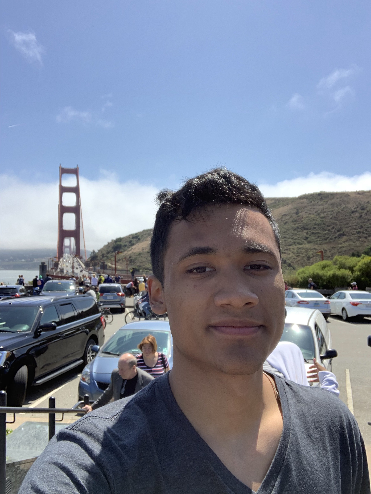
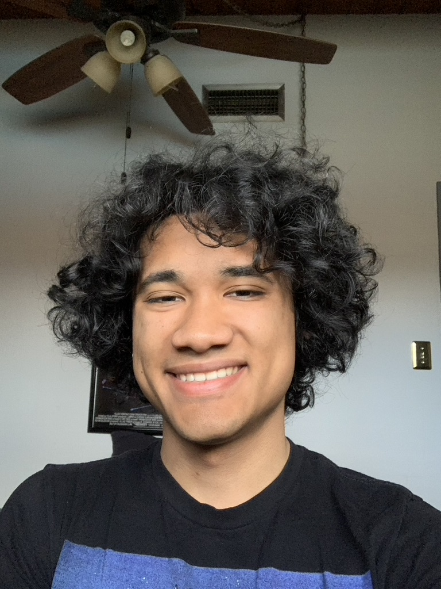

I code to create. I code to be challenged. I code for Fun
Senior at Make School ● Bakersfield, CA
Artist, Software Developer, Hardware Engineer, Go-Getter, Friend, I am this and much more. But
most of all I am a
student
who wants to learn. I have created an abundance of projects (some of which you will see below), and
hope to build a lot more that help
produce a better future for everyone. I hope to grow as a leader, creator, and overall
person.
My main goals include finish all my personal projects, helping all I can, and overall just having a
good time. Life is too short not to love it.


Education
Make School, San Francisco, CA (Remote)
B.S. Applied Computer Science (expected Aug. 2021)
Highlights
Industrious Student
At Highland High School was a PLTW
Honors, Scholar Athlete, Honor Role, Art club member, percussion pit synth
1, and active volunteer at CALM Zoos. Now at Make School as a Senior, ran the Music Club, helped
at hackathons, and was a FEW
TA (2019-2020).
Autodidactic
HackerEarth top 10% of programmers (2017), Web Developer Certificate (2018) from
FreeCodeCamp, self taught C/C++, self taught Piano (and other instruments),
self taught Hardware Engineer.
Geared Up
Pool boy (2012), Grape Harvester (2015), Oil Field assistant, Associate level 2 at
In N Out Burger (2018-2019).
For all the chefs new and old who are finding it hard to decide what to eat for dinner today,
Toeta is the solution for you. The goal of this project was to solve the ever lasting question
"What do I want to eat today?". With many plans for the future as what this project should be,
it currently just gives a random recipe using spoonacular API. It took a lot of time to get
this thing to go server side, given that static websites aren't meant to be on clouds, so I made
a php backend to solve this problem, and hope for this to become much more in the future. See
more here.
The virtual trading card game, was a project in which 4 people, including
myself, worked in a female empowered group. The amount of
stress that went into this project, involving teamwork affairs, and making everything come
together was insane. However the idea was great, and the journey was greater. I was in charge of
ensuring that all pushes, merges, and pulls were cleanly done
in git, as well as making sure that the server could run on a live server, and making sure that
the database information could be interpreted by our website. I learned a lot about team
oriented programing, git, and backend programing. See more
here.
After many months of endless coding, I was in charge of getting our vex brain to
interpret remote controls, autonomous driving,
and ensuring that the machine could surpass the obstacles collecting as many points as possible.
I pushed the members of our team to do their parts and stayed on top of mine to ensure that our
team made it to state. In my first year there I got the
struggling Team Z to the Google Complex, in San Jose, to compete for world. See more
here.
Work Experience
Make School
(Remote) San Francisco, CA
Teaching Assistant
Aug. 2020 - Jan. 2021
Helped a class of 240 students debug, and develop their projects. Growing them into better Software
Engineers
Was responsible for reviewing topics, teaching concepts, and fixing student’s errors in one on one
meetings. Using technologies such as HTML, CSS, SASS, node.js, Python, jinja, and flask. I think a
good teacher learns from their students, and have not only gained debugging and conceptualization
skills, but friendships.
Volunteer Experience
CALM Zoos
Bakersfield, CA
Volunteer
Nov. 2017 - Feb. 2018
Did basic cleaning of pins, and feed some of the animals. I wanted to give those zoo animals the best
lives possible given that they had been domesticated and taken from their homes. But as much as I
like animals I won't be going vegan for them. This was just a nice experience and was me trying to
help out in my community.
This was an experiment a peer and I made. Our goal was to create a path finder. Despite it being
a very slow program, users are able to draw on the canvas and create mazes, a start and end
point, and see all the paths our little knuckles took in order to find the way. See more
here.
C.H.D. (C++, Arduino - Hardware
Engineer)
CHD (pronounce Chad), short for Christmas hack decorations, was a personal
project I did in my freetime. My goal was to
learn more about hardware, by hacking christmas lights and making them flash to music. I still
use these lights til this day, and they make great party lights.
After burning 7 fuses, and desperately looking for information from friends and the internet. I
was finally able to put everything together, and figure it all out in under 2 weeks. Learning
how Audrino, currents, and microphone information. I also
wrote an article so that others could learn from my mistakes. See more here!
It had been a while since I was able to use css, so I decided to make a fun animation with my
free time. This focuses on the concept of animations, and I used some of the things I learned in
working in maya to help establish ideas and what I wanted to do. See more
here.
This is a small survey project, and another step towards my Web Designer
Certificate. I can make custom ones just for you, and you can
send it to all of your friends. This site is very small and simple, but it shows potential uses
in more organized online applications which are used almost completely over paper applications.
Whether if it's for a job, college, or just a simple quiz
about you. This website displays that I can make it for you! See more
here.
Additional Experience
In-N-Out Burger
Bakersfield, CA
Lvl 2 Associate
Nov. 2018 - Aug. 2019
Gained a bunch of soft skills from my first ever real job. It was a fast-paced environment, where I
worked mostly as a bilingual cashier and on customer services. Heavily based on communication and
teamwork skills I was responsible for taking orders, Cleaning, Making French Fries and drinks, and
serving customers with a smile. This job had a very bright and hardworking environment that I really
came to enjoy, and taught me the importance of customer's happiness, sales, and safety.
Valencia Farms
Bakersfield, CA
Harvester
Oct. 2015
This was really a job of diligence, with freezing mornings to hot afternoons bending over to pick
ready grapes. The largest barrier being language, and having to communicate best I could knowing a
lot less spanish than I do now. This job taught me about humbleness, gratitude, and working smarter
over working harder.
Leadership Experience
I was a Link Crew member, the Executive Programmer of Highland Robotics Team Z,
as well as the President and Founder of the Music Club at Make School
Industry Collaboration Experience
Trilliant.ai (React.js - Design Lead/Git Master)
Collaborated with a team of 3 to design a website to match the client's needs. Contributed to the
website's search algorithm using tags and filters to help users search the website’s
catalog. Managing all commits to the repository. After about 4 months of work, our team was able
to meet the clients needs and spend more time on design, and other features. Going threw the
trials of having an incomplete google sheet as our database and the struggles of hosting a
website live on firebase. We also had creative freedom over the original website. See more
here.
A Deeper Dive
Make School
Got accepted: to a 10% acceptance rate (2019). I spent all summer working my hardest to prove
that I was able to attend this school.
Music Club: Founder of Make School’s Music Club, running meetings and fundraisers (2020).
TA: Was hired as a front end Web teacher assistant, Helping a class of 150 students debug, and
develop their projects. Growing them into better Software Engineers. Using technologies such as
HTML, CSS, SASS, node.js, Python, jinja, and flask. (Aug. 2020- Jan. 2021)
Graduating: Learning how to become a better Software developer, as well as industry skills in
this accelerated 2-year program (Aug. 2019-Dec. 2021)
High School
Art Club: during lunch and outside of school, we would join to create artworks. And won 3rd
place in the mini-league for Via Arte (2015).
Sports: Was in Track and Football -with our team winning 10-0, and being the top 12 sprinters at
my school (2015-2016).
Honor Athletes Award: Awarded to students who were in sports and maintained a GPA of 3.5 or
higher (2016).
PPAACC: I was the
2nd chair in my regular band playing clarinet, however, while also joining the pit, I became the
lead pianist, as well as being in charge of all the electronics when it came to setting up and
tearing down the operation. In charge of playing piano, and sound effects for the show. We were
to act out scenes and learn our parts before bringing them together for one beautiful piece. We
got 1st out of 18 Schools in my last competition (2017-2018).
HackerEarth top 10%: recognized as top 10% of programmers on their site for C (2017).
ROC: Went into 3D animation at ROC which is a career center in Bakersfield meant to get people
jobs under those classes. I worked with Maya, Photoshop, and Adobe Pro (2018).
Link Crew: Was responsible for helping 12 new students and their parents learn about and feel
more comfortable for their first time being at Highland (2018).
FreeCodeCamp Web Design Certificate: 300+ hours and 5 projects based on learning html5, css3,
and bootstrap (2018).
Robotics: An executive programmer from the PLTW Engineering class, teaching
others how to code, and brought my team (Z) to state. We won 5th out of 35 schools (2018-2019).
PLTW Honor Engineer: recognized
for having higher than a 3.5 grade for at least 3 years (2019).
Associate Lvl 2: Working at In-N-Out Burger was a learning experience. I gained a bunch of soft
skills from my first ever real job. It was a fast-paced environment, where they worked mostly on
cashier and customer service. Heavily based on communication and teamwork skills (Nov. 2018 -
Aug. 2019).
Before High School
Trustworthiness Award - May seem silly but I'm still proud of it (2007).
Moved a lot! This may not seem like much of a skill but learning to adapt to new environments
consistently was a large trial for me and has also helped me learn how to communicate better
with strangers having to meet so many new ones. I also kept good grades in school despite being
bullied, lacking information, and having to deal with family turmoil (2001-2009)
Pool boy helping neighbors clean their pool was a small-time thing, and the neighbor has moved
since (2013).
Worked in the fields as a harvester picking grapes (2015).
Worked in the OilField helping out with whatever was asked of me, including breaking pipes and
running wells (still going whenever needed).